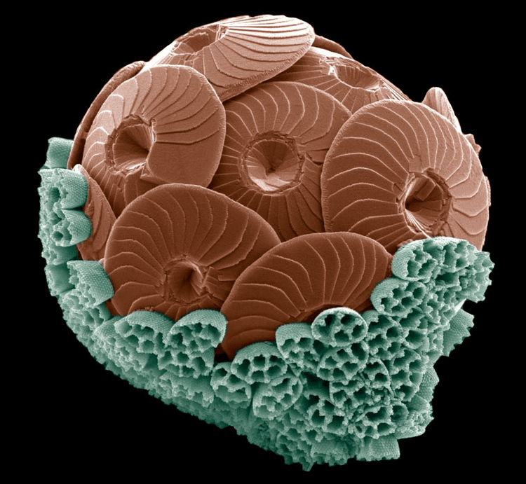
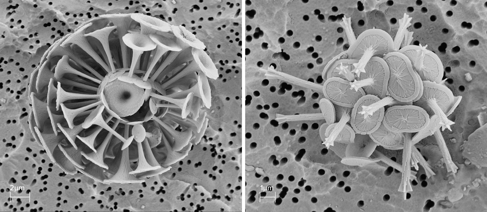
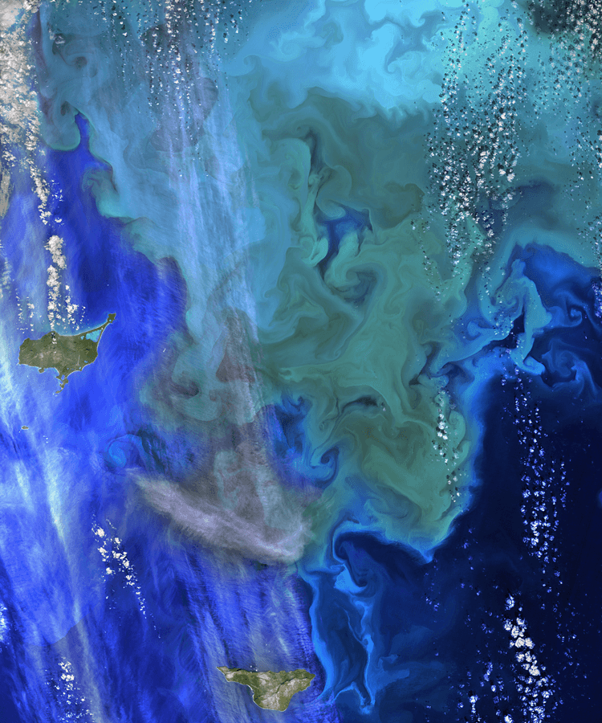

1988年夏天，早期职业海洋学家巴尼·巴尔奇（Barney Balch）在缅因湾的卫星图像中发现了一块异常反射的水。他和附近的比奇洛海洋科学实验室的同事安排了一项研究巡游进行调查。
温带大西洋这一部分的海水通常呈深蓝宝石色调。但这个补丁更轻，更典型的热带岛屿。 “我们从这个东西出来了，水从地平线到地平线基本上是绿松石色，”Balch说。 “你本以为我们已经在比米尼岛搁浅了。”
这个明亮的斑块在明年夏天回归 - 一个非常大的绿松石漩涡蔓延到大约100,000平方公里。水样证实了Balch怀疑导致了明亮斑块的原因：数万亿的coccolithophores，微小的单细胞藻类，由矿物方解石制成反射性石灰石板，如上面的假彩色扫描电子显微照片所示。
这两个花开了Balch，他仍然在Bigelow实验室工作，致力于学习更多关于coccolithophores的事业，coccolithophores是世界上最丰富的浮游植物群之一。随着卫星图像的改进，研究人员已经更加详细地确定和研究了花朵。他们追踪了微生物改变海洋化学的几个重要方式，包括海洋储存二氧化碳的能力，从而使其远离大气层。因此，虽然每个单独的细胞并不比人类头发更宽，但这些花朵的巨大程度使得球孢子虫对海洋化学以及全球气候产生了巨大的影响。
但是，由于气候变化使海洋更加酸性并且对石灰石具有腐蚀性，一些地区对于形成壳的生物将变得不那么友好。 Balch及其同事正在努力了解海洋酸化如何影响全球的球团聚集体丰度和分布，以及这些变化如何影响它们在调节气候方面的作用。

通过将温室气体二氧化碳从大气中拉出来制造糖，所有光合生物都在一定程度上帮助调节地球的恒温器。 但是，coccolithophores以其他各种独特的方式帮助冷却地球，这些方式与它们的球形球体相关，即围绕它们外部的白垩白球。
一方面，这些球体闪烁得如此明亮，以至于它们可以保护海洋免受太阳辐射的影响。 “它们就像是将光线反射回太空的小镜子”，Balch说，他在2018年海洋科学年度评论中撰写了关于球藻状态变化的概述。 他解释说，在没有花朵的情况下，开阔的海洋更深，更能吸收太阳的热量。
另一方面，每个球形圈由数十个华丽的板块组成，称为coccoliths，它们会定期流入海洋 - 这些自由浮动的微观盘片可以粘附并拖下来自表面的粪便，粘液和其他分解物质碎片海洋对海底的影响。由于分解会产生二氧化碳，因此将这种物质穿梭到深处会减少二氧化碳排放到大气中，并以另一种方式抵御气候变暖。
在他的办公室里，可以看到缅因湾，Balch展示了一个延时的视频，其中一个板块在一个coccolithophore细胞内发展。一旦完全形成，光盘就会被引导到电池的外部，藻类继续建造更多。 “这些coccolith中的每一个都需要大约两个小时才能完成，”Balch说，屏幕上咧嘴一笑，对这些生物进行了数十年的艰苦研究。
Coccolithophores全年生活在海洋中，但它们令人印象深刻的花朵往往会在夏至时爆发。 “他们总是潜伏在背景中，”巴尔奇说，“这是夏天的派对时间。”这主要是因为海洋表面的营养水平在一年的这个时候往往会下降。大多数浮游植物依赖于高水平的营养物质如硝酸盐来存活，但是球孢子虫可以耐受相对较低的浓度。因此，他们利用初夏的营养物质消耗来竞争其他浮游生物。

这些季节性开花可以跨越距离比缅因湾更为令人印象深刻，包括一个在北大西洋盆地已经达到约50万平方公里的复发。世界上最广泛的花朵覆盖了南极洲周围的整个南大洋，占全球海洋的16％，处于秋季和秋季之间的高峰期。 Balch及其同事在2011年和2012年的一系列巡航中发现它时将其称为大方解石带。
Coccolithophores目前是世界上最丰富和最具环境影响的浮游植物群之一 - 事实上，科学家认为它们是整个海洋中石灰石的最大贡献者。巴西伯南布哥联邦大学的海洋学家马里乌斯·穆勒（MariusMüller）研究了球石钙化，他说，随着海洋因气候变化而酸化，它们的流行程度可能会下降。他解释说，在酸性水域中，coccolithophores需要更加努力地改变其细胞内海水的化学成分，形成方解石。而额外的精力充沛的成本是以牺牲其他重要任务为代价的，例如成长和再现。他说，这可能使非壳形成的生物体能够胜过球藻和其他生命形式的挣扎。
事实上，2015年基于南大洋卫星图像的研究确实发现，大型方解石带中的球藻壳生产在1998年至2014年的研究期间可能会减少，可能是由于酸化。尽管如此，研究人员对于不同地区的不同种类的球孢子虫如何对海洋酸化作出反应仍有相互矛盾的发现。在一个案例中，Balch在2015年合着的一项研究表明，北大西洋人口从1965年到2010年增长了近20％。研究人员推测，当时大气中二氧化碳的增加实际上通过促进光合作用使浮游植物生长受到影响，并带来了好处。这比这个地方酸化的影响更重要。
加拿大新不伦瑞克Mount Allison大学的海洋学家Laura Bretherton表示，由于其他因素也会影响生长，包括海洋温度，不同纬度的日长和养分可用性，因此酸化反应的变化也会产生。 “这表明海洋环境是多么复杂，”她说。 “这不会是统一的。”
了解这些复杂的相互作用对于预测地球未来气候的更广泛变化至关重要。但穆勒和巴尔奇表示，高环境风险并不是吸引他们参与这项研究的唯一因素。 coccoliths引人注目的美丽也是如此。这些华丽的盘子的目的仍然有点神秘，但理论表明它们可能有助于防止病毒感染细胞或提供保护免受微小的海洋动物，如可能想吃它们的桡足类动物。 “更好的方式，”巴尔奇说，“为了避免被贪婪的桡足类吃掉，而不是用石头掩盖自己？”
尽管它们在海洋中具有普遍性和重要性，但coccolithophores对于普通大众来说仍然相对不熟悉。 Balch希望通过今年出版一本电子书来帮助改变这一点，这将说明coccoliths对存在的数百种物种采取的许多引人注目的形式。
当我们在他的办公室点击这些形式的图像时，很明显这是一种爱的劳动。 “我非常感谢这些事情，”他说。 “他们真是太棒了。”